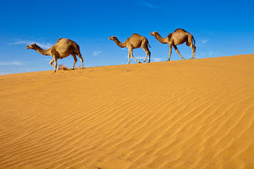

Peste 100.000 de imagini gratuite cu Soarele și Natura - Pixabay
2020.09.24 10:02

Explorează Autentificare Join Media Fotografii Ilustrații Vectori Filme Alegerea Editorului Popular Images Popular Videos Community Blog Forum Artists Camere foto About Întrebări frecvente Termeni Confidenţialitate Despre noi API Language Čeština Dansk Deutsch English Español Français Indonesia Italiano Magyar Nederlands Norsk Polski Português Română Slovenčina Suomi Svenska Türkçe Việt ไทย Български Русский Ελληνική 日本語 한국어 简体中文 Autentificare Join Încarcă Fotografii Ilustrații Vectori Filme ✖ ‹ › Căutare sigură Populare Cele mai recente Viitoare Populare ✓ Alegerea Editorului Imagini Imagini ✓ Fotografii Grafică vectorială Ilustrații Filme Orientare Orice orientare ✓ Orizontal Vertical Categorie
122.417 Imagini gratuite de Soarele
Imagini înrudite: natura soare peisaj sky mare ocean beach amurg nori soarele 2252 1816 429 Femeie Fată Libertate 2337 2321 242 Valuri Răsărit De Soare 2232 1680 378 Răsărit De Soare Soare 1760 1937 230 Destul De Femeie Tineri 1614 1769 208 Seara Soare 866 905 180 Planetă Lună Orbită 2554 2206 292 Fantezie Frumos 4205 3173 707 Arbore Apus De Soare 1151 955 198 Apus De Soare Câmp Mac 2268 2026 338 Pod Aur Lumină Mistic 2010 2240 346 Summerfield Femeie Fată 2692 2479 430 Drum Grinzi Calea 2342 2109 503 Sunrise Spaţiu 1977 1791 332 Apus De Soare Mac 1582 1366 241 Arbore Câmp Calm 705 637 98 Sunrise Soare Nori Sky 1308 1254 173 Tianjin Crepuscul City 1206 1050 140 Apus De Soare Copac 1355 1325 216 Arbore Natura Lemn 1100 1086 181 Natura Pădure Soare 2094 2085 231 Natura Pădure Arbori 1707 1394 336 Apus De Soare 1294 1064 186 Apus De Soare 1934 1487 330 Barcă Apusul Soarelui 1493 1667 190 Sunrise Barcă 1135 1051 170 Plajă Marea Nordului 1522 1566 210 Bule De Aer Scufundări 1228 1281 132 Peisaj Lac 1227 1259 133 Eclipse Crepuscul Lună 1829 1624 351 Tineret Active Salt 1371 1686 150 Munţi Panoramă Pădure 1253 1019 214 Apus De Soare Păsări 1194 1163 133 Dealuri Peisaj Ceaţă 1288 1259 169 Lumina Soarelui Pădure 1846 1651 221 Parcul Național Yellow... 1447 1213 184 Tatăl Şi Fiul Mers 2089 2012 311 California Apus De Soare 1290 1336 247 Echilibru Meditaţie 756 904 88 Rază De Soare Pădure 1338 1484 107 Albastru 1643 1504 237 Cafe Arhitectura 1685 1394 250 Toamna Peisaj Natura 1188 1114 111 Canion Munţii Râul 854 798 104 Vara Apus De Soare 1595 1448 169 Scoţia Peisaj Munţi 1123 1166 180 Beach Păsări 540 615 53 Luminile De Nord Aurora 1227 1091 139 Copac Singuratic Arbore 919 1040 103 Orizont Sky 885 763 135 Soare Setarea Cer 1146 1091 155 Balon Cu Aer Cald Lac 871 864 94 Apus De Soare Soare 590 474 101 Apus De Soare Seara 852 856 74 Pădure Peisaj Soare 941 1027 81 Oameni Om Femeie 335 400 45 Lumină Întuneric Pădure 681 532 108 Nor Sky Galben Soare 1246 1179 330 Bora-Bora 590 766 98 Peisaj Munţi Soare 2060 2012 342 Apus De Soare Arbore 1092 932 135 Tropical De Vară 1159 1114 224 Fundal Panoramă 746 800 77 Ocean Apus De Soare 800 677 107 Terre Cinque Italia 1324 1457 125 Panorama Bled Insula 615 577 69 Păpădie Soare Plante 932 752 123 Cuplu Romantism 1135 1111 161 Modă Palarie De Soare 628 498 102 Pescăruş Pasăre Zbor 894 825 90 Parcul Zion Utah Munţi 689 764 37 Iarnă Zăpadă Sunrise 249 247 44 Beach Ocean 1262 1240 193 Răsărit De Soare Arbore 816 928 116 Dimineaţa Ceaţă 946 777 101 Peisaj Ceaţă Dispoziţie 1779 1595 294 Aventura Înălţime 607 612 129 Apus De Soare Nor 598 520 88 Apus De Soare Dawn 867 1150 88 Oameni Femeie Călătorie 741 950 48 De Apă Valuri Reflecţie 1077 879 144 Femeie Barcă Sky 570 665 73 Apus De Soare Sărut 729 803 84 Balon Cu Aer Cald Lac 554 447 154 Apus De Soare Sky Mare 774 962 100 Podul Golden Gate 555 455 103 Câmp Arbori Natura 1020 816 174 Leu Safari Africa 1252 1063 130 Băiat Şedinţă Felinar 799 592 201 Persoană Uman Bucurie 171 161 10 Est Soare 839 851 121 Peisaj Dublu Soare 638 805 53 Sunrise Barcă 846 839 157 Dark Hedges Armoy 788 593 77 Natura Baloturi De Fân 520 643 58 Pădure Copaci 625 719 43 Apus De Soare Munte 887 961 87 Fată Şedinţă Ponton 601 530 84 Dawn Papierschiff Navă 522 656 41 Palmier Palm Ocean 482 694 58 Floare Copil Hippie Următoarea pagină › 122.417 Imagini gratuite de Soarele ▲
Soarele şi luna - Povesti Nemuritoare Soarele reuşise să îi ardă coroana. Cu toate acestea, copacul continua să supravieţuiască în deşert. Într-o zi un şoim trecea în zbor deasupra deşertului. Pasărea a zărit copacul şi aşa a venit şi s-a aşezat pe ramurile lui. Şoimul s-a uitat împrejur şi îi spune copacului.
Soare în deşert | Vectori din domeniul public Mirajul in deşert În deşert, soarele poate atinge temperaturi foarte ridicate. El usucă foarte mult aerul din imediata sa apropiere şi îşi schimba indicele de refracţie. Avem deci un indice de refracţie variabil ce are loc deasupra solului şi refracţia se produce.
Localitatea Dăbuleni devine prima zonă de deşert din... Numai soarele pârjoli tor al deşertului poate arde şi se afirmă că acesta prevesteşte durere şi sfârşitul tuturor lucrurilor. Dacă, în vis, apusul soarelui este extrem de frumos, colorat în roşu-sângeriu, puteţi spera la o bătrâneţe frumoasă (vezi, de asemenea, „aur", „lună", „deşert").
Soarele în citate, maxime, aforisme - diane.ro Soarele şi luna …baladă populară culeasă de Gh. Dem. Teodorescu. Foaie de cicoare, În prunduţ de mare Iată că-mi răsare Puternicul Soare. Dar el nu-mi răsare, Ci va să se-nsoare; Că mi-a tot umblat Lumea-n lung şi-n lat,
Copacul din deşert | AniDeȘcoală.ro Oraşul e acum deşert sărăcăcios Iar soarele dispare ros de vină. În dansul şui al torţei dezlânate, Întreg Egiptul se animă în pereţi. Sub mâini de sclavi cad spicele înalte În cântul-rugă îngânat de cântăreţi Şi ziduri grele se despincă-n văl de fum Stânci risipite din nisipuri se adună, Se rânduiesc palate ...
deşert | SERTARUL CU GANDURI Ne-am ”adâncit” către deşert. Soarele dimineţii era blând şi făcea ca nisipul să strălucească cu fiecare fir. De aproape pare mai roşiatic. În circa 50 de minute eram deja la hotel în Ras Al Khaimah. Maşina care ne-a transferat a fost dotată cu scaun de maşină potrivit vârstei copilului (a se menţiona în rezervare în ...
Emiratul Ras al Khaimah – cum a fost în vacanţă cu un ... „Soarele luminează toate marginile lumii. Psaltirea luminează toate simţirile inimii, toate cugetele sufletului şi toate mişcările minţii, căci omul este un microcosmos. ... al iubirii de stăpânire şi al grăirii în deşert, într-un cuvânt să curăţăm inima noastră de neiertare. Să scoatem din inima noastră neiertarea şi ...
Muntele Sinai: o nestemată în deşert — Watchtower ... Soarele este o stea G2 obişnuită, una dintre cele mai mult de 100 miliardede stele din galaxia noastră. diametru: 1,390,000 km. masa: 1.989e30 kg temperatura: 5800 K (suprafaţă) 15,600,000 K (miez) Soarele este de departe cel mai mare corp din Sistemul Solar. Conţine mai mult de 99.8% din masa totală a Sistemului Solar. (Jupitero mare…